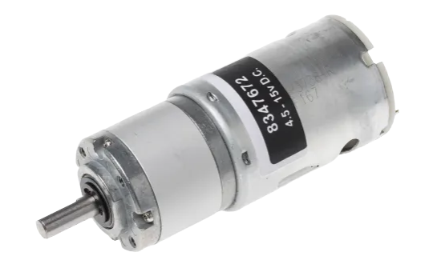
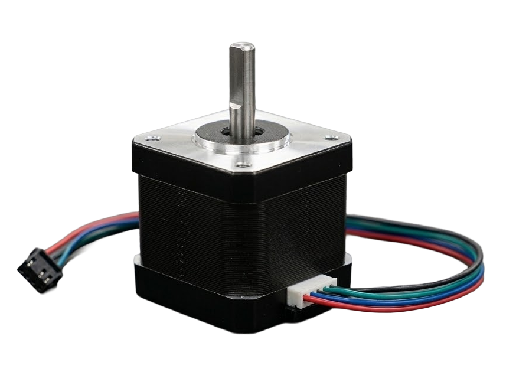

1 Axes Controller Board
{kind=link}
The Axes Controller Board (ACB) represents the neural center of the Dedalus mechatronic system. It serves as the high-speed bridge between the high-level trajectories planning generated by the Raspberry Pi 5 and the deterministic, real-time actuation of the physical motors.
The repository is available here.
Unlike standard commercial 3D printing controller boards, the ACB is specifically engineered to handle complex, closed-loop dynamics. By offloading the computationally heavy path planning to the Raspberry Pi and reserving the STM32H7 MCU for hard real-time control, the board achieves a level of synchronization and responsiveness capable of managing high-inertia loads with micrometric precision. The communication layer relies on a high-bandwidth SPI interface, allowing the board to consume motion “blocks” and execute them through a multi-stage control architecture.
The ACB is designed to simultaneously manage brushed DC motors for high-torque linear motion and Stepper motors for precision orientation/positioning and extrusion.
The selected motors for the system are:
| Geared DC Motor | Stepper Motor |
|---|---|
 |
 |
1.1 DC Motors Setup
In order to perform properly the PIDs, the board implements a full state-space feedback system, sensing multiple quantities to close the loop on velocity and position:
AS5048Aas rotative encoders mounted along each motor axis as feedback on angular velocity;RLCI2Cas linear magnetic encoders mounted along the axes to provide absolute positioning feedback, bypassing mechanical inaccuracies such as belt stretch or gearbox backlash;ACS37800as current sensors in order to monitor the real-time flowing current that is proportional to the motor torque.
This 3 sensors are managed for each DC motor, that in total are 3:
- A single DC motor for the X axis (extruder axis);
- A single DC motor for the Y axis (printing plate axis).
The 3 DC motors are then actuated thanks to an external double-H-bridge driver in a IBT-4 configuration. The Axes Controller Board’s MCU drives it using 2 complementary PWM signals for each motor, in order to select the rotation direction (CW/CCW). The PID algorithm outputs the commanding signal that is then written inside the CCR register (Capture Compare Register) that is proportional to the duty cycle.
1.2 Stepper Motors Setup
Stepper motors are actuated thanks to TMC drivers, that implement micro-stepping and STEP/DIR interface. They are driven by the MCU using these 2 signals while correcting the STEP position using the rotative encoder. The used stepper motors configuration is:
- 2 steppers for Z positioning;
- 2 steppers for global plate pitch orientation;
- 1 stepper for local plate yaw orientation;
- 1 stepper for plastic material flow.
1.2.1 DMA
The DMA of STM32H723ZGT6 is used as follow:
- interface with SPI1 for
Raspberry Pi5communication; - interface with SPI2 for 3 daisy-chain-configured rotative encoders;
- interface with SPI3 for the other 3 daisy-chain-configured rotative encoders;
- interface with SPI4 for current sensor readings.
1.3 Firmware Architecture
The motion control of Dedalus is managed by a custom bare-metal firmware developed for the STM32H7 architecture, designed to handle high-frequency control loops.
1.3.1 DMA-Driven Data Acquisition
To achieve strict real-time performance and eliminate CPU overhead during high-frequency closed-loop control, the system relies on Direct Memory Access (DMA) for sensor communication. The physical rotary encoders (AS5048A) are connected to the SPI1 and SPI2 buses in a Daisy Chain configuration, enabling the synchronous acquisition of multiple axes (e.g., Z, A, C) within a single data transaction.
1.3.1.1 High-Speed Triggering (10 kHz Control Loop)
The core position-control loop is driven by a hardware timer (TIM6) operating at a strict 10 kHz frequency, providing a narrow 100 µs execution window. Instead of employing blocking SPI calls that would stall the CPU, the timer’s Interrupt Service Routine (ISR) is used solely to initiate the data request. The firmware asserts the Chip Select (CS) line and triggers a non-blocking HAL_SPI_TransmitReceive_DMA request.
Before launching the DMA, the firmware forces a microscopic manual toggle of the CS line to HIGH and clears any residual SPI Overrun (OVR) flags. This acts as a hardware reset for the encoders’ internal state machines, preventing the bus from deadlocking due to electrical noise or missed clock edges.
1.3.1.2 Asynchronous Execution and Jitter Elimination
Offloading the SPI transaction to the DMA controller physically decouples the data transmission from the CPU execution. At a standard SPI baud rate (e.g., 1.0 to 2.0 Mbps), transferring the 48 bits required for three daisy-chained 16-bit encoders takes approximately 24 to 48 µs. While the DMA handles this data shifting in the background, the CPU is immediately released. This allows the processor to handle other critical operations—such as updating the linear encoders or evaluating path planning—without introducing execution jitter to the stepper motor generation.
1.3.1.3 L1 Data Cache Management
The STM32H7 architecture employs a high-performance Cortex-M7 core equipped with an L1 Data Cache. Because the DMA streams the incoming SPI payload directly into the RAM matrix, it bypasses the CPU entirely. Consequently, the CPU’s L1 cache becomes temporarily out of sync with the physical memory.
To ensure data integrity, the system leverages the DMA Transfer Complete Callback (HAL_SPI_TxRxCpltCallback). Before processing the newly arrived spi1_rx_buf array, the firmware executes an SCB_InvalidateDCache_by_Addr operation. This critical step invalidates the specific memory region linked to the buffer, forcing the CPU to fetch the fresh, exact positional data from RAM before calculating the new motor targets.
1.3.2 Stepper Motors Control
The positioning axes are driven by stepper motors (Moons’ C17HD4 series) operating in a strict closed-loop configuration. The control algorithm runs inside the 10 kHz system timer (TIM6) interrupt, continuously computing the positional error between the target coordinates and the high-resolution feedback provided by the AS5048A rotary encoders.
1.3.2.1 Hysteresis Deadband
A major challenge in closed-loop stepper control is “hunting” (or limit cycling)—a high-frequency vibration occurring when the computed positional error falls below the physical microstepping resolution of the motor, causing continuous forward/backward corrections. To eliminate this, the firmware implements a dynamic, state-aware hysteresis deadband:
- Active State (Moving): A tight tolerance (e.g., 0.15°) is used to accurately determine when the motor has reached the target.
- Idle State (Stopped): Once the target is reached and the motor stops, the tolerance is significantly widened (e.g., 0.60°). This prevents the system from violently reacting to microscopic inertial overshoots or mechanical elasticity, ensuring the motor remains perfectly silent and structurally rigid once in position.
1.3.2.2 Hardware-Level PWM Generation
To guarantee perfectly deterministic step generation without CPU bit-banging overhead, the firmware manipulates the STM32 hardware timers (e.g., TIM4, TIM8, TIM15) in PWM Generation mode. The calculated required speed is converted into a step frequency (Hz). The algorithm dynamically recalculates and updates the timer’s Auto-Reload Register (ARR) to adjust the frequency on the fly, while keeping the Capture/Compare Register (CCR) at ARR / 2 to maintain an optimal 50% duty cycle for the stepper drivers.
1.3.2.3 Anti-Glitch Protection
When updating timer frequencies dynamically, modifying the ARR to a value lower than the current Counter (CNT) value can cause the timer to overflow to 0xFFFF, resulting in a severe step delay (glitch). The stepper_command function actively prevents this by automatically resetting the CNT register if it exceeds the newly calculated ARR. Furthermore, a low-frequency cutoff filter is implemented: if the requested speed drops below 10 Hz, the firmware aggressively zeroes the CCR register. This instantly disables the PWM output, allowing the stepper driver to inject pure holding torque, completely eradicating low-frequency acoustic resonance.
1.3.3 DC Motors Control
1.3.3.1 Inner Velocity Loop
The velocity loop is critical for the dynamic stability of the brushed DC motors.
- It runs at every occurrence of the Timer 6 interrupt (\(dt=0.0001s\));
- it receives a composite velocity setpoint, consisting of the position feedback plus the feedforward from the
Raspberry Pi; - the firmware calculates the acceleration contribution (Ka) in real-time. This is derived from the smooth motion profile to overcome the inertia of the 3 kg cradle before a velocity error even occurs;
- it directly generates the
PWMsignal sent to theCCRregisters of Timer 1.
1.3.3.2 Outer Position Loop
The position loop manages absolute spatial precision by reading the RLCI2C linear encoders from RLS.
- It runs every 10 cycles of the velocity loop using a
pid_counter; - it reads the real position via the H7’s hardware encoder inputs (
Timer 2andTimer 3); - it calculates the corrective velocity required to nullify the position error relative to the interpolated target received from the
Raspberry Pi. - thanks to the 10-micron resolution of the RLS sensors, this loop ensures the machine maintains its nominal coordinate by correcting for mechanical backlash or belt flex;
2 Mechanical Structure
The mechanical foundation of the project is based on a Creality CR10 Max. Its natively large build volume is crucial for this multi-axis modification, as it provides the necessary spatial clearance to safely perform complex rotations and translations without colliding with the frame. The original massive heated bed has been entirely removed and replaced with a more compact 20x20 cm print bed, which is much better suited for 5-axis kinematics.
The Yaw Axis (Local Bed Rotation) At the core of the moving platform is the local yaw axis. The 20x20 print plate is directly mounted onto a dedicated stepper motor. This motor handles the continuous rotational movement of the bed around its vertical axis, acting as the rotational platter for the workpiece.
The Pitch Axis and the “Cradle” The print bed and its yaw stepper motor are nested inside a custom structural frame, referred to as the “Cradle”. The Cradle is suspended and rotated by two stepper motors—one mounted on each side—which govern the pitch angle of the entire bed assembly. A critical design choice here is the weight distribution: the inner yaw stepper and the bed are positioned so that their combined center of mass aligns perfectly with the pitch rotation axis. This mechanical balancing ensures that the dual pitch steppers only need to overcome the rotational inertia of the structure, rather than fighting gravity to hold a static unbalanced load.
The Y-Axis Translation To move this entire cradle assembly back and forth, the original V-wheel and bearing system of the CR10 was stripped away. It has been upgraded with high-precision linear guides mounted directly onto the base aluminum extrusions. The two pitch stepper motors sit on top of the sliding carriages riding on these rails. The linear translation along the Y-axis is driven by a single, powerful DC motor. To ensure both sides move in perfect synchronization and avoid racking, this motor is equipped with a custom extended drive shaft that hosts two separate toothed pulleys. Each pulley drives a timing belt connected to one of the carriages, pulling the cradle evenly along the linear rails.
The X-Axis (Extruder Gantry) The X-axis, which carries the extruder, retains the original CR10 gantry aluminum profile but has undergone a similar heavy-duty upgrade. The stock V-wheels have been replaced with a linear rail to guarantee superior rigidity and precision. Additionally, the standard stepper motor has been swapped out for a DC motor, enabling fast, closed-loop linear positioning for the toolhead.
Power and Aesthetics Powering this complex mechatronic setup is a dedicated 400W Power Supply Unit (PSU), which delivers a steady 12V output directly to the custom motor control board. Finally, to highlight the custom mechanics and give the machine a striking, high-tech aesthetic, custom LED lighting has been integrated throughout the chassis.